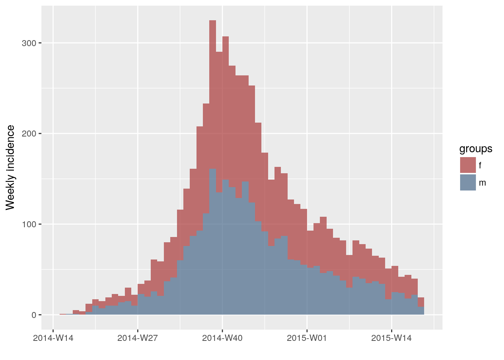
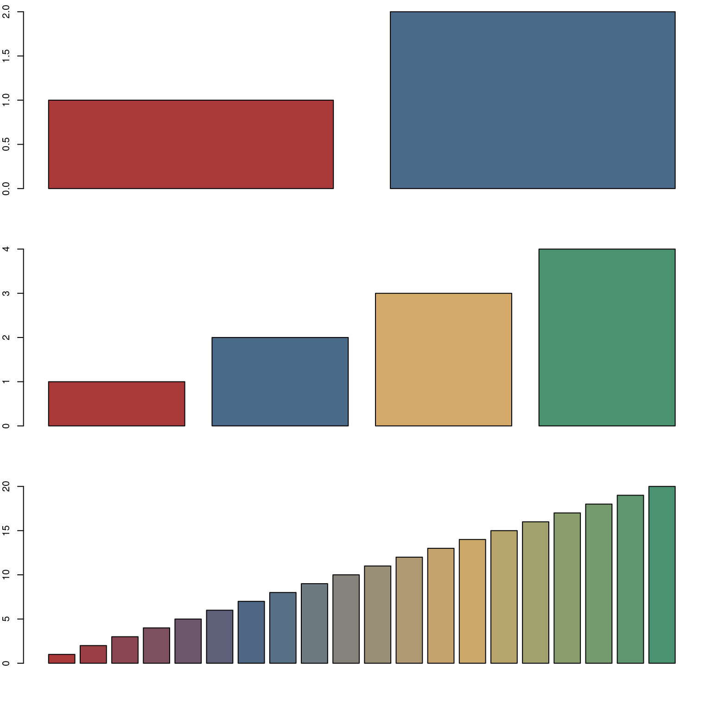
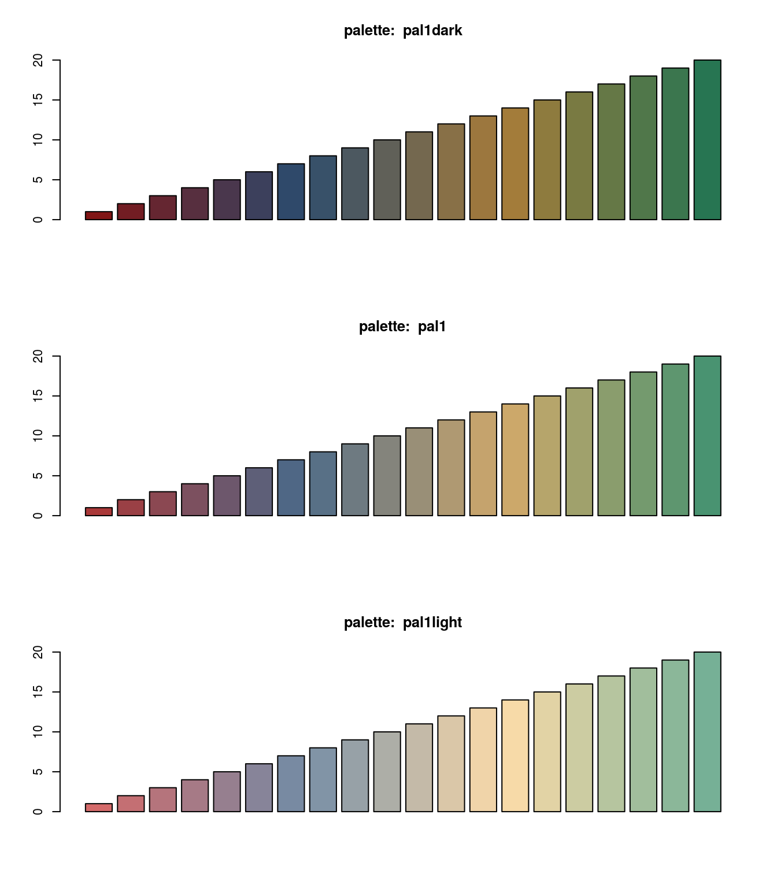
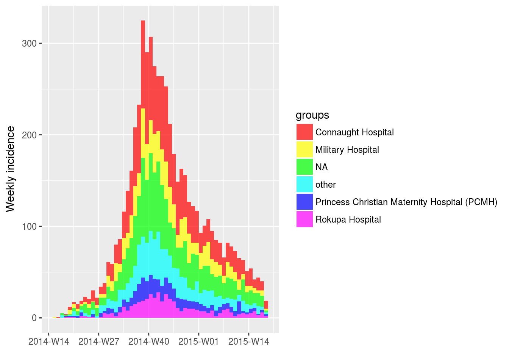
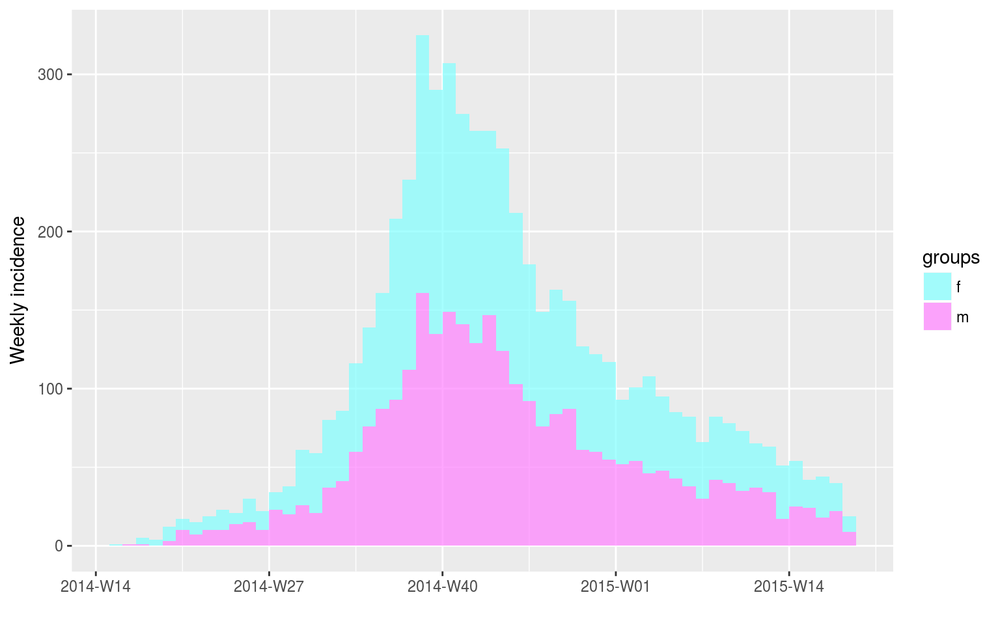
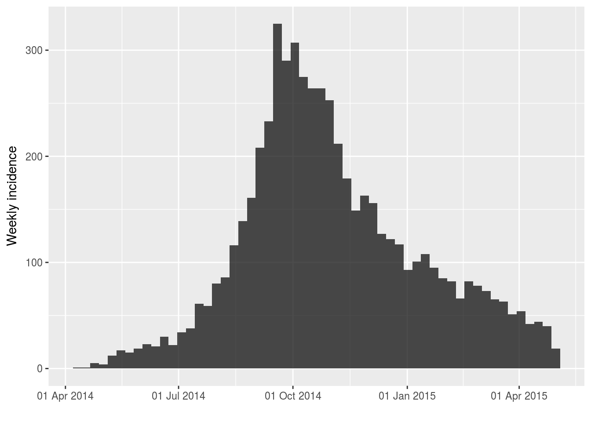
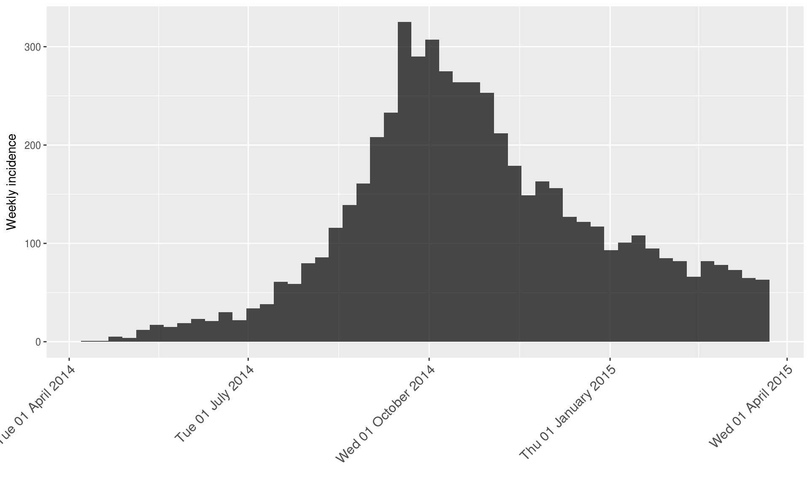
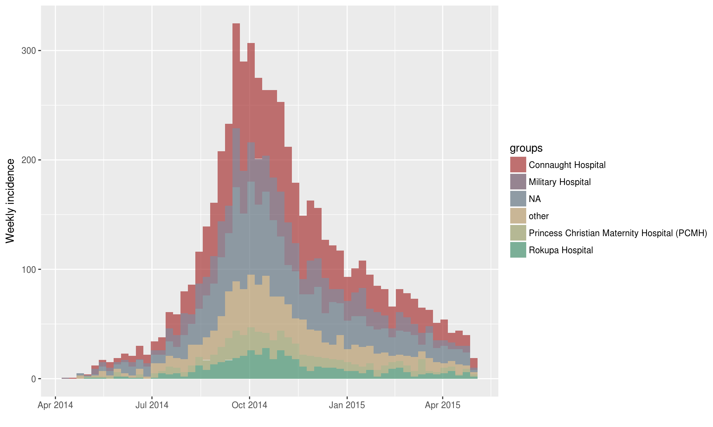
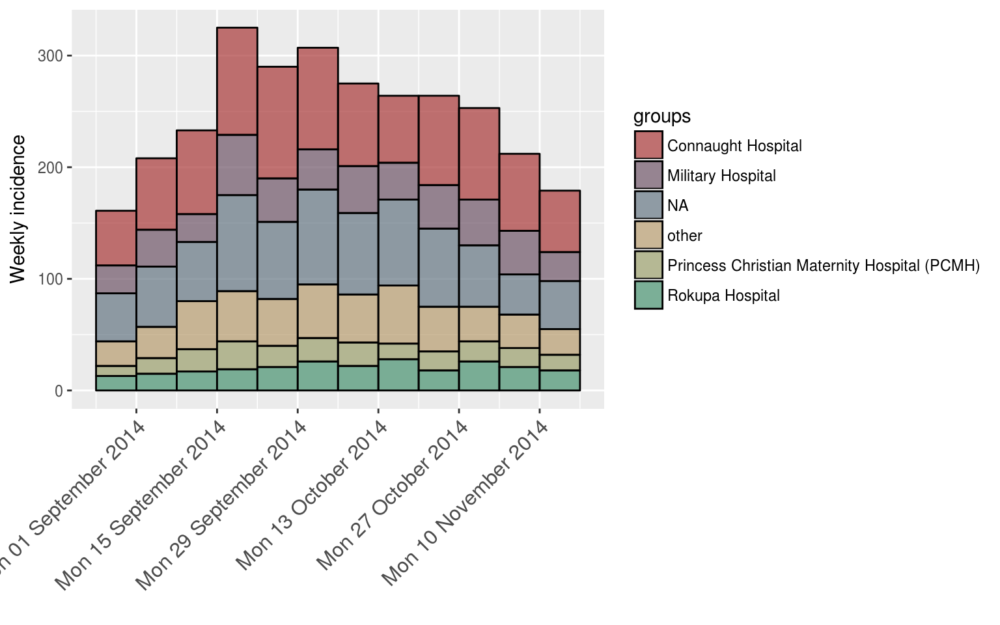
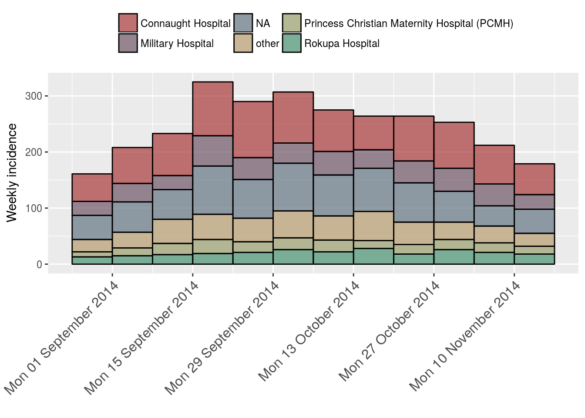

Customize plots of incidence
Thibaut Jombart
2018-05-30
customize_plot.RmdThis vignette provides some tips for the most common customisations of graphics produced by plot.incidence. Our graphics use ggplot2, which is a distinct graphical system from base graphics. If you want advanced customisation of your incidence plots, we recommend following an introduction to ggplot2.
Example data: simulated Ebola outbreak
This example uses the simulated Ebola Virus Disease (EVD) outbreak from the package outbreaks: ebola_sim_clean.
First, we load the data:
library(outbreaks)
library(ggplot2)
library(incidence)
onset <- ebola_sim_clean$linelist$date_of_onset
class(onset)
#> [1] "Date"
head(onset)
#> [1] "2014-04-07" "2014-04-15" "2014-04-21" "2014-04-27" "2014-04-26"
#> [6] "2014-04-25"We compute the weekly incidence:
i <- incidence(onset, interval = 7)
i
#> <incidence object>
#> [5829 cases from days 2014-04-07 to 2015-04-27]
#> [5829 cases from ISO weeks 2014-W15 to 2015-W18]
#>
#> $counts: matrix with 56 rows and 1 columns
#> $n: 5829 cases in total
#> $dates: 56 dates marking the left-side of bins
#> $interval: 7 days
#> $timespan: 386 days
#> $cumulative: FALSE
i.sex <- incidence(onset, interval = 7, group = ebola_sim_clean$linelist$gender)
i.sex
#> <incidence object>
#> [5829 cases from days 2014-04-07 to 2015-04-27]
#> [5829 cases from ISO weeks 2014-W15 to 2015-W18]
#> [2 groups: f, m]
#>
#> $counts: matrix with 56 rows and 2 columns
#> $n: 5829 cases in total
#> $dates: 56 dates marking the left-side of bins
#> $interval: 7 days
#> $timespan: 386 days
#> $cumulative: FALSE
i.hosp <- incidence(onset, interval = 7, group = ebola_sim_clean$linelist$hospital)
i.hosp
#> <incidence object>
#> [5829 cases from days 2014-04-07 to 2015-04-27]
#> [5829 cases from ISO weeks 2014-W15 to 2015-W18]
#> [6 groups: Connaught Hospital, Military Hospital, NA, other, Princess Christian Maternity Hospital (PCMH), Rokupa Hospital]
#>
#> $counts: matrix with 56 rows and 6 columns
#> $n: 5829 cases in total
#> $dates: 56 dates marking the left-side of bins
#> $interval: 7 days
#> $timespan: 386 days
#> $cumulative: FALSE
The plot.incidence function
When calling plot on an incidence object, the function plot.incidence is implicitely used. To access its documentation, use ?plot.incidence. In this section, we illustrate existing customizations.
Default behaviour
By default, the function uses grey for single time series, and colors from the color palette pal1 when incidence is computed by groups:
plot(i)plot(i.sex)
plot(i.hosp)However, some of these defaults can be altered through the various arguments of the function:
args(incidence:::plot.incidence)
#> function (x, ..., fit = NULL, stack = is.null(fit), color = "black",
#> border = NA, col_pal = pal1, alpha = 0.7, xlab = "", ylab = NULL,
#> labels_iso_week = !is.null(x$isoweeks))
#> NULLChanging colors
The default palette
A color palette is a function which outputs a specified number of colors. By default, the color used in incidence is called pal1. Its behaviour is different from usual palettes, in the sense that the first 4 colours are not interpolated:
par(mfrow = c(3,1), mar = c(4,2,1,1))
barplot(1:2, col = pal1(2))
barplot(1:4, col = pal1(4))
barplot(1:20, col = pal1(20))
This pallette also has a light and a dark version:
par(mfrow = c(3,1))
barplot(1:20, col = pal1dark(20), main = "palette: pal1dark")
barplot(1:20, col = pal1(20), main = "palette: pal1")
barplot(1:20, col = pal1light(20), main = "palette: pal1light")
Using different palettes
Other color palettes can be provided via col_pal. Various palettes are part of the base R distribution, and many more are provided in additional packages. We provide a couple of examples:
plot(i.hosp, col_pal = rainbow)
plot(i.sex, col_pal = cm.colors)
Specifying colors manually
Colors can be specified manually using the argument color; note that whenever incidence is computed by groups, the number of colors must match the number of groups, otherwise color is ignored.

Useful ggplot2 tweaks
Numerous tweaks for ggplot2 are documented online. In the following, we merely provide a few useful tips in the context of incidence.
Changing dates on the x-axis
Changing date format
By default, the dates indicated on the x-axis of an incidence plot may not have the suitable format. The package scales can be used to change the way dates are labelled (see ?strptime for possible formats):
library(scales)
plot(i, labels_iso_week = FALSE) +
scale_x_date(labels = date_format("%d %b %Y"))
And for another example, with a subset of the data (first 50 days), using more detailed dates and rotating the annotations:
plot(i[1:50]) +
scale_x_date(labels = date_format("%a %d %B %Y")) +
theme(axis.text.x = element_text(angle = 45, hjust = 1, size = 12))
#> Scale for 'x' is already present. Adding another scale for 'x', which
#> will replace the existing scale.
Note that you can save customisations for later use:
rotate.big <- theme(axis.text.x = element_text(angle = 45, hjust = 1, size = 12))Changing the grid
The last example above illustrates that it can be useful to have denser annotations of the x-axis, especially over short time periods. Here, we provide an example where we try to zoom on the peak of the epidemic, using the data by hospital:
plot(i.hosp)
Let us look at the data 40 days before and after the 1st of October:
period <- as.Date("2014-10-01") + c(-40, 40)
i.zoom <- subset(i.hosp, from = period[1], to = period[2])
detailed.x <- scale_x_date(labels = date_format("%a %d %B %Y"),
date_breaks = "2 weeks",
date_minor_breaks = "week")
plot(i.zoom, border = "black") + detailed.x + rotate.big
#> Scale for 'x' is already present. Adding another scale for 'x', which
#> will replace the existing scale.
Changing the legend
The previous plot has a fairly large legend which we may want to move around. Let us save the plot as a new object p and customize the legend:
p <- plot(i.zoom, border = "black") + detailed.x + rotate.big
#> Scale for 'x' is already present. Adding another scale for 'x', which
#> will replace the existing scale.
p + theme(axis.text.x = element_text(angle = 45, hjust = 1, size = 12),
legend.position = "top", legend.direction = "horizontal",
legend.title = element_blank())